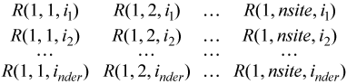
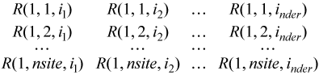
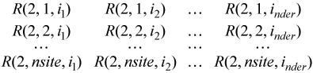
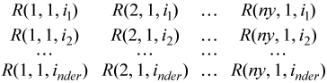
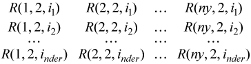
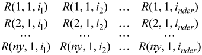
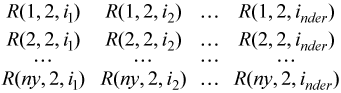

Runs data fitting computations.
Syntax
status = dfsinterpolate1d(task, type, method, nsite, site, sitehint, ndorder, dorder, datahint, r, rhint, cell)
status = dfdinterpolate1d(task, type, method, nsite, site, sitehint, ndorder, dorder, datahint, r, rhint, cell)
status = dfsinterpolateex1d(task, type, method, nsite, site, sitehint, ndorder, dorder, datahint, r, rhint, cell, le_cb, le_params, re_cb, re_params, i_cb, i_params, search_cb, search_params)
status = dfdinterpolateex1d(task, type, method, nsite, site, sitehint, ndorder, dorder, datahint, r, rhint, cell, le_cb, le_params, re_cb, re_params, i_cb, i_params, search_cb, search_params)
Include Files
- mkl_df.f90
Input Parameters
Name |
Type |
Description |
|---|---|---|
task |
TYPE(DF_TASK) |
Descriptor of the task. |
type |
INTEGER |
Type of spline-based computations. The parameter takes one or more values combined with an OR operation. For the list of possible values, see table "Computation Types Supported by the df?interpolate1d/ df?interpolate1d Routines". |
method |
INTEGER |
Computation method. The supported value is DF_METHOD_PP. |
nsite |
INTEGER |
Number of interpolation sites. |
site |
REAL(KIND=4) DIMENSION(*) for dfsinterpolate1d/dfsinterpolateex1d REAL(KIND=8) DIMENSION(*) for dfdinterpolate1d/dfdinterpolateex1d |
Array of interpolation sites of size nsite. The structure of the array is defined by the sitehint parameter:
|
sitehint |
INTEGER |
A flag describing the structure of the interpolation sites. For the list of possible values of sitehint, see table "Hint Values for Interpolation Sites". If you set the flag to DF_NO_HINT, the library interprets the site-defined partition as non-uniform. |
ndorder |
INTEGER |
Maximal derivative order increased by one to be computed at interpolation sites. |
dorder |
INTEGER DIMENSION(*) |
Array of size ndorder that defines the order of the derivatives to be computed at the interpolation sites. If all the elements in dorder are zero, the library computes the spline values only. If you do not need interpolation computations, set ndorder to zero and pass a NULL pointer to dorder. |
datahint |
REAL(KIND=4) DIMENSION(*) for dfsinterpolate1d/dfsinterpolateex1d REAL(KIND=8) DIMENSION(*) for dfdinterpolate1d/dfdinterpolateex1d |
Array that contains additional information about the structure of partition x and interpolation sites. This data helps to speed up the computation. If you provide a NULL pointer, the routine uses the default settings for computations. For details on the datahint array, see table "Structure of the datahint Array". |
r |
REAL(KIND=4) DIMENSION(*) for dfsinterpolate1d/dfsinterpolateex1d REAL(KIND=8) DIMENSION(*) for dfdinterpolate1d/dfdinterpolateex1d |
Array for results. If you do not need spline-based interpolation, set this pointer to NULL. |
rhint |
INTEGER |
A flag describing the structure of the results. For the list of possible values of rhint, see table "Hint Values for the rhint Parameter". If you set the flag to DF_NO_HINT, the library stores the result in row-major format. |
cell |
INTEGER DIMENSION(*) |
Array of cell indices in partition x that contain the interpolation sites. Provide this parameter as input if type is DF_INTERP_USER_CELL. If you do not need cell indices, set this parameter to NULL. |
le_cb |
INTEGER |
User-defined callback function for extrapolation at the sites to the left of the interpolation interval. |
le_params |
INTEGER DIMENSION(*) |
Pointer to additional user-defined parameters passed by the library to the le_cb function. |
re_cb |
INTEGER |
User-defined callback function for extrapolation at the sites to the right of the interpolation interval. |
re_params |
INTEGER DIMENSION(*) |
Pointer to additional user-defined parameters passed by the library to the re_cb function. |
i_cb |
INTEGER |
User-defined callback function for interpolation within the interpolation interval. |
i_params |
INTEGER DIMENSION(*) |
Pointer to additional user-defined parameters passed by the library to the i_cb function. |
search_cb |
INTEGER |
User-defined callback function for computing indices of cells that can contain interpolation sites. |
search_params |
INTEGER DIMENSION(*) |
Pointer to additional user-defined parameters passed by the library to the search_cb function. |
Output Parameters
Name |
Type |
Description |
|---|---|---|
status |
INTEGER |
Status of the routine:
|
r |
Contains results of computations at the interpolation sites. |
|
cell |
Array of cell indices in partition x that contain the interpolation sites, which is computed if type is DF_CELL. |
Description
The df?interpolate1d/df?interpolateex1d routine performs spline-based computations with user-defined settings. The routine supports two types of computations for interpolation sites provided in array site:
Type |
Description |
|---|---|
DF_INTERP |
Compute derivatives of predefined order. The derivative of the zero order is the spline value. |
DF_INTERP_USER_CELL |
Compute derivatives of predefined order given user-provided cell indices. The derivative of the zero order is the spline value. For this type of the computations you should provide a valid cell array, which holds the indices of cells in the site array containing relevant interpolation sites. |
DF_CELL |
Compute indices of cells in partition x that contain the sites. |
If the indices of cells which contain interpolation types are available before the call to df?interpolate1d/df?interpolateex1d, you can improve performance by using the DF_INTERP_USER_CELL computation type.
Note
If you pass any combination of DF_INTERP, DF_INTERP_USER_CELL, and DF_CELL computation types to the routine, the library uses the DF_INTERP_USER_CELL computation mode.
If you specify DF_INTERP_USER_CELL computation mode and a user-defined callback function for computing cell indices to df?interpolateex1d, the library uses the DF_INTERP_USER_CELL computation mode, and the call-back function is not called.
If the sites do not belong to interpolation interval [a, b] , the library uses:
- polynomial P0 of the spline constructed on interval [x0, x1] for computations at the sites to the left of a.
- polynomial Pn-2 of the spline constructed on interval [xn-2, xn-1] for computations at the sites to the right of b.
Interpolation sites support the following hints:
Value |
Description |
|---|---|
DF_NON_UNIFORM_PARTITION |
Partition is non-uniform. |
DF_UNIFORM_PARTITION |
Partition is uniform. |
DF_SORTED_DATA |
Interpolation sites are sorted in the ascending order and define a non-uniform partition. |
DF_NO_HINT |
No hint is provided. By default, the partition defined by interpolation sites is interpreted as non-uniform. |
Note
If you pass a sorted array of interpolation sites to the Intel® oneAPI Math Kernel Library, set thesitehint parameter to the DF_SORTED_DATA value. The library uses this information when choosing the search algorithm and ignores any other data hints about the structure of the interpolation sites.
Data Fitting computation routines can use the following hints to speed up the computation:
- DF_UNIFORM_PARTITION describes the structure of breakpoints and the interpolation sites.
- DF_QUASI_UNIFORM_PARTITION describes the structure of breakpoints.
Pass the above hints to the library when appropriate.
For spline-based interpolation, you should set the derivatives whose values are required for the computation. You can provide the derivatives by setting the dorder array of size ndorder as follows:
Orders of derivatives id(d = 1, 2, .., nder), corresponding to non-zero derivatives to be calculated, form the array {id} of length nder≤ndorder.
The storage format for the interpolation results is specified using the rhint parameter values. For each storage format, Table Hint Values for the rhint Parameter describes how to get the result R(j, s, id) from array r, for function index j(1 ≤j≤yn), site number s(1 ≤s≤nsite), and derivative index id(1 ≤d≤nder), where yn is the number of functions, nsite is the number of sites, and nder is the total number of non-zero derivatives for interpolation. The array r can be either a one-dimensional array of size ny*nder*nsite or a three-dimensional array with the dimensions described in the table.
Value |
Location of R(j, s, id), One-dimensional Array Storage |
Location of R(j, s, id), Three-dimensional Array Storage |
|---|---|---|
DF_MATRIX_STORAGE_FUNCS_SITES_DERS (DF_MATRIX_STORAGE_ROWS) |
r(d - 1 + nder*(s - 1 + nsite*(j - 1)) + 1) |
r(d, s, j) r declared as r(nder, nsite, ny). |
DF_MATRIX_STORAGE_FUNCS_DERS_SITES (DF_MATRIX_STORAGE_COLS) |
r(s - 1 + nsite*(d - 1 + nder*(j - 1)) + 1) |
r(s, d, j) r declared as r(nsite, nder, ny). |
DF_MATRIX_STORAGE_SITES_FUNCS_DERS |
r(d - 1 + nder*(j - 1 + ny*(s - 1)) + 1) |
r(d, j, s) r declared as r(nder, ny, nsite). |
DF_MATRIX_STORAGE_SITES_DERS_FUNCS |
r(j - 1 + ny*(d - 1 + nder*(s - 1)) + 1) |
r(j, d, s) r declared as r(ny, nder, nsite). |
DF_NO_HINT |
No hint is provided. By default, the results are stored as in rhint = DF_MATRIX_STORAGE_FUNCS_SITES_DERS. |
|
The following figures show the structure of the storage formats. Each shows sequential memory layout line by line, left to right.
Storage in r for rhint = DF_MATRIX_STORAGE_FUNCS_SITES_DERS (DF_MATRIX_STORAGE_ROWS):

Storage in r for rhint = DF_MATRIX_STORAGE_FUNCS_DERS_SITES (DF_MATRIX_STORAGE_COLS):


Storage in r for rhint = DF_MATRIX_STORAGE_SITES_FUNCS_DERS:

Storage in r for rhint = DF_MATRIX_STORAGE_SITES_DERS_FUNCS:


To speed up Data Fitting computations, use the datahint parameter that provides additional information about the structure of the partition and interpolation sites. This data represents a floating-point or a double array with the following structure:
Element Number |
Description |
|---|---|
1 |
Task dimension |
2 |
Type of additional information |
3 |
Reserved field |
4 |
The total number q of elements containing additional information. |
5 |
Element (1) |
... |
... |
q+4 |
Element (q) |
Data Fitting computation functions support the following types of additional information for datahint(2):
Type |
Element Number |
Parameter |
|---|---|---|
DF_NO_APRIORI_INFO |
0 |
No parameters are provided. Information about the data structure is absent. |
DF_APRIORI_MOST_LIKELY_CELL |
1 |
Index of the cell that is likely to contain interpolation sites. |
To compute indices of the cells that contain interpolation sites, provide the pointer to the array of size nsite for the results. The library supports the following scheme of cell indexing for the given partition{xi}, i=1,...,nx:
cell(j) = i, if site(j) ∈[xi, xi+1), i = 0,..., nx - 2,
cell(j) = nx - 1, if site(j) ∈[xnx - 1, xnx],
cell(j) = nx, if site(j) ∈(xnx, xnx + 1],
where
- x0 = -∞
- xnx+1 = +∞
- j = 1,..., nsite
To perform interpolation computations with spline types unsupported in the Data Fitting component, use the extended version of the routine df?interpolateex1d. With this routine, you can provide user-defined callback functions for computations within, to the left of, or to the right of interpolaton interval [a, b]. The callback functions compute indices of the cells that contain the specified interpolation sites or can serve as an approximation for computing the exact indices of such cells.
If you do not pass any function for computations at the sites outside the interval [a, b], the routine uses the default settings.